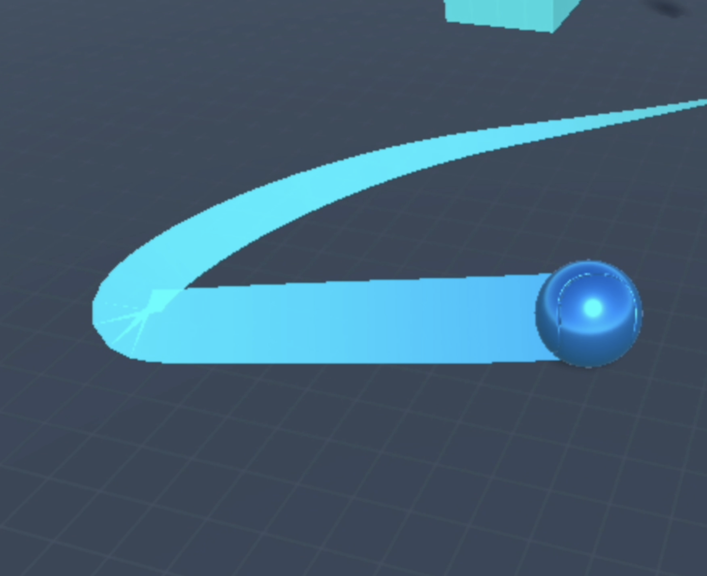
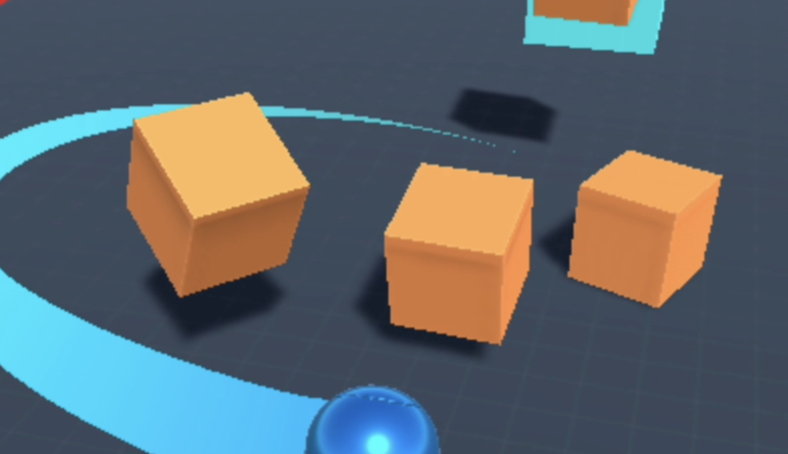
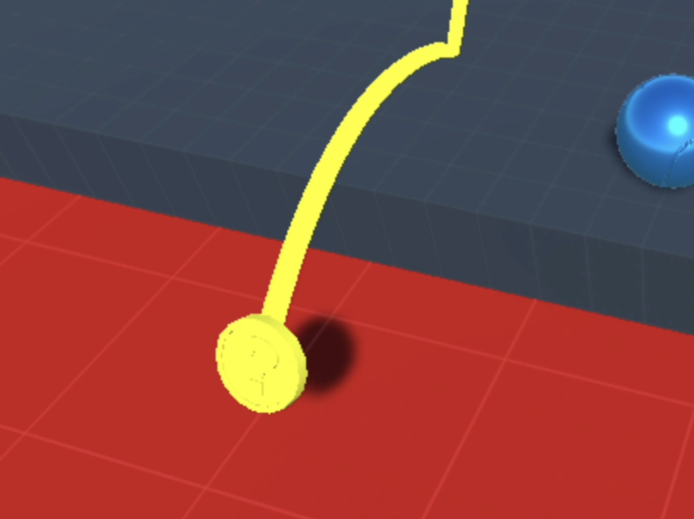
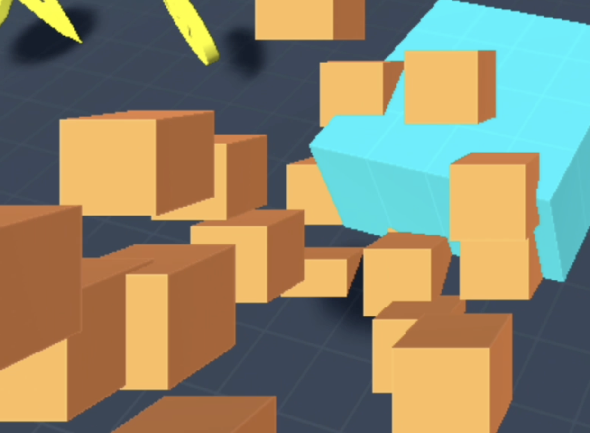

Roller Madness
Welcome to Roller Madness, a thrilling adventure into the world of game development! In this blog post, I'm excited to share the story behind the creation of Roller Madness, my very first game. Join me as I recount the challenges, triumphs, and invaluable lessons learned along the way.
Roller Madness is a 3D game developed using Unity. The game is a simple game where the player controls a ball and tries to collect coins while avoiding obstacles.
Designing the Game
Creating Roller Madness required meticulous attention to detail across various aspects of game design and implementation.
Camera Setup
The camera setup in Roller Madness was pivotal for providing players with an immersive gameplay experience. By carefully configuring camera angles, field of view, and follow behavior, we ensured that players could navigate the game world with ease while maintaining a clear view of the action.
Physics
Physics played a central role in Roller Madness, governing the behavior of objects within the game environment. Leveraging Unity's robust physics engine, we simulated realistic interactions such as object collisions, gravity effects, and dynamic forces. This added depth and realism to gameplay, enhancing immersion and player engagement.
Player Control and Movement
Player Movement
Crafting an immersive and intuitive first-person control scheme was pivotal in Roller Madness. Leveraging Unity's capabilities, I fine-tuned parameters such as acceleration and sensitivity to ensure seamless navigation. Players find themselves immersed in the game world, deftly maneuvering the ball to avoid obstacles and outsmart enemies with precision and agility.
Enemy Behavior
Enemy Movement
Enemies in Roller Madness exhibit dynamic bouncing behavior, adding layers of challenge and excitement. By coding their movements to bounce and pursue the player relentlessly, enemies become formidable adversaries. Players must rely on quick reflexes and strategic planning to evade them while collecting coins. Each encounter with enemies heightens the intensity, demanding skillful navigation to progress through the game.
Physics of Coin Bouncing
Coin Bouncing
The physics of coin bouncing added a layer of realism and excitement to Roller Madness. Coins are strategically dropped to test players' spatial awareness and dexterity. Through meticulous adjustment of physics parameters, collecting the bouncing coins becomes a thrilling pursuit, rewarding players for their skill and precision.
Lighting
Lighting played a crucial role in shaping the mood and atmosphere of Roller Madness. By leveraging Unity's versatile lighting system, we crafted dynamic and immersive environments that responded dynamically to changes in time of day and environmental conditions. Real-time shadows, reflections, and ambient occlusion added depth and realism to the game world, enhancing immersion and visual fidelity.
Particles and Animation
Particles
Particles and animation breathed life into Roller Madness, imbuing the game world with movement, dynamism, and personality. We used Unity's powerful particle system to create stunning visual effects such as explosions, sparks, and environmental phenomena. Additionally, animation brought characters, objects, and environmental elements to life, adding depth and personality to the gameplay experience.
Challenges that I faced along the way
Implementing physics and bounces correctly emerged as the primary challenge during the development of Roller Madness. The intricacies of simulating realistic ball dynamics, including gravity, friction, and collision responses, posed significant hurdles. Fine-tuning the physics engine to ensure the ball interacted convincingly with the game environment while maintaining a fluid and responsive player experience demanded careful calibration and experimentation.
Moreover, achieving lifelike coin bounces presented its own set of challenges. Balancing factors such as restitution, friction, and mass to create natural and satisfying coin physics required meticulous adjustment and iteration. Ensuring that coins responded dynamically to player interactions, bouncing realistically off surfaces and reacting to environmental elements, added complexity to the implementation process.
Overcoming these challenges demanded a deep understanding of Unity's physics system, coupled with creative problem-solving and a willingness to iterate and refine. Through persistent experimentation and refinement, we were able to overcome the complexities of physics implementation, ultimately enhancing the realism and immersion of Roller Madness' gameplay experience.
Play My Game

Conclusion
In conclusion, Roller Madness has been an incredible journey of discovery, learning, and growth. Despite the challenges faced along the way, the process of creating my first game has been immensely rewarding. Throughout this project, I was able to overcome technical hurdles, refine gameplay mechanics, and create an immersive gaming experience. Roller Madness taught me valuable lessons in problem-solving, creativity, and resilience, which I will carry forward into future projects.